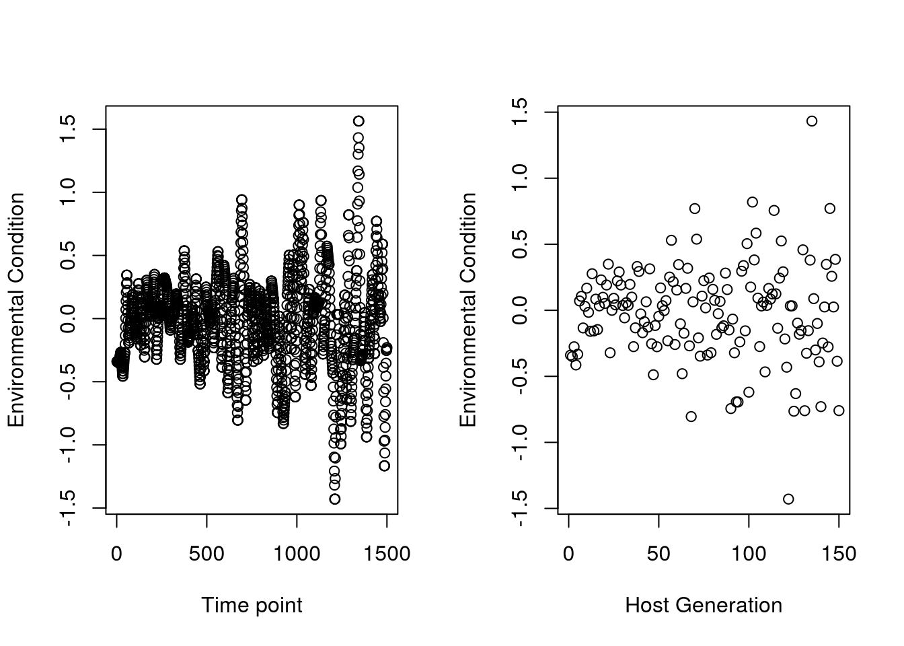
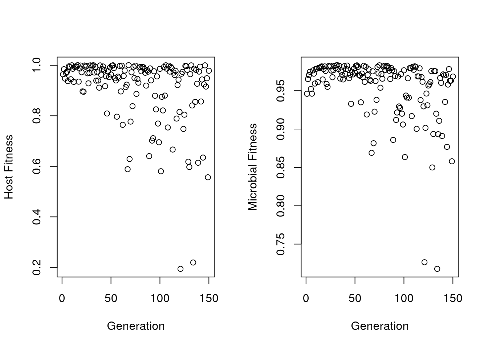

2 Paper 1 - Joint consideration of selection and microbial generation count provides unique insights into evolutionary and ecological dynamics of holobionts
Here I provide a general outline for the framework presented in our paper.
2.1 Creating offspring function - create_offspring_loop.cpp
Here we implementing the create offspring function, this essentially takes in a host population and generates the offspring for the subsequent host generation. We determine the individuals which reproduce elsewhere in the code, this just takes those parents and produces offspring children.
It functions by calculating the relative abundance of each microbe in the parent, the relative abundance in the environment, and the combines the abundances based on the relative contribution of parent vs environment to the child. The fitness of each microbial taxa in the host is determined and the product of the fitness and the relative abundance determines the sampling probability of that microbe into the offspring. The microbes are then sampled multinomially to produce the offsprings microbiome.
We implement this as a C++ R code, because this is executed many many times and it is very slow to run it normally in R.
Rcpp::sourceCpp("./create_offspring_loop.cpp")
Create_OffSpring_Pop_cpp<-function(host_pop,n_micro,env_pool,envpoolsize,X,fixed_envpool,
selection_parameter_microbes,selection_parameter_hosts,microbe_trait_list, host_microbe_optima,
N_Species,env_condition){
microbe_names<-paste("Microbe",1:N_Species,sep="_")
ENV_sampling_probability<-(env_pool)/envpoolsize #Calculate initial sampling probability based on environmental relative abundance
names(ENV_sampling_probability)<-names(env_pool)
offspring_population<-offspring_loopfunc(host_pop = host_pop,ENV_sampling_probability = ENV_sampling_probability,
host_microbe_optima = host_microbe_optima, X = X,
selection_parameter_microbes = selection_parameter_microbes,
env_condition = env_condition,microbe_trait_list = microbe_trait_list,
n_micro = n_micro,microbe_names = microbe_names)
offspring_population<-list(offspring_population$host_pop,env_pool,microbe_trait_list,offspring_population$fitness_microbes,
offspring_population$weighted_samplingprob)
names(offspring_population)<-c("Child","Env","microbe_trait_list","microbefitness","microbe_samplingprob")
offspring_population
}2.2 General simulation wrapper code
This code first works by calculating initial fitness values so we have them recorded. It loops over N generations, and within that loops over each microbial generation. For each bacterial generation, we start by generating a new environmental pool based on the previous pool, and fitness based selection. It does this by first using the process_microbe_probs C++ function. This takes in the environmental pool from the previous generation, the host population, and the environmental condition.
2.3 Generating environmental pools.
Microbial fitness is determined based on the fitness calculation based on each microbes optima and the environmental condition. We then multiple the relative abundance and the fitness to the give the initial sampling probability for microbes in the environment. This determines the fitness based sampling for the environment, we then determine the relative abundance of each microbe in the fixed environment, and the host populations. Each microbes abundance is then multipled by its relative contribution to give its sampling probability.
For example, if hosts contribute 2% to the environment each generation, we would determine the relative abundance of microbes in the combined host population, and multiply that by 0.02 - the resulting values are the sampling probabilities for that microbe from the host. Next we would do the same for the fixed environment, so let’s say it’s 5% from the fixed environment - it would be relative abundance multiplied by 0.05. Finally we now have 93% that is determined by the previous generation and fitness. So we would multiply the fitness based sampling probabilities by 0.93.
We then sum all the sampling probabilities - and this gives us the ultimate sampling probability for that microbial generations environment.
2.4 Generating new microbiomes within a host generation
With the environmental pool now generated, we can generate a new microbiome for the hosts. This occurs with the process_host_cpp function, which determines the relative abundance of microbes in the environment, and in each host. We then calculate the fitness of each microbe when inside a host based on the mean of the host trait and the environmental condition. For example, if the environmental condition is 0.2 and the host optima is 0 - then the ‘ideal’ microbe has a trait value of 0.1. In this paper, we set all host trait values to 0.
Fitness is determined for each microbe, and we then undertake fitness based selection. First, some proportion (self_seeding) of the microbiome is retained from the previous generation, and the remainder is acquired from the environment. Thus we can again calculate relative abundances in the host and environment, multiply these by either the self_seeding proportion or 1-self_seeding. These values are then multipled by the fitness values for each microbe to give us a fitness adjusted sampling probability. Once again, we then used multinomial sampling to generate a new microbiome.
2.5 Generating new hosts
After some determined number of microbial generations has passed, hosts can reproduce. These hosts are determined based on fitness. To do this, we calculate a ‘composite’ trait value for each host - which is the weighted mean trait values of their microbes. Therefore, the hosts innate trait value does not effect its fitness directly, but rather by adjusting its microbiome. We can calculate the mean microbial trait value for each host - and then based on the distance between the environmental condition and the composite trait value we can determine the fitness. The fitness is then used as a sampling probability for hosts, where we sample hosts to reproduce WITH replacement based on their fitness until we have a full population of hosts.
We then generate the new generation of hosts based on their parental microbiome. The parental microbiome is determined using the Create_OffSpring_Pop_cpp function discussed above. ## Clarify here how to save different elements of the data
lapply_wrapper_CPP<-function(XY,
HostPopulation, N_Microbes, envpoolsize, env_pool,fixed_envpool,generations,per_host_bac_gens,self_seed_prop,
selection_parameter_hosts,selection_parameter_microbes,host_trait_list,N_Species,traitpool_microbes,
generation_data_file,selection_parameter_env,env_cond_val,
microbiome_importances,host_microbe_optima,mutation_rate,mutation_sd,print_currentgen){
#Note: selection_parameter_hosts can be used to turn on, and adjust intensity of HS - when zero, host selection is off.
#Similarly when selection_parameter_microbes is 0, we are using a neutral model, regardless of the given value of SelectionType.
temp_list <- list()
print(paste("Current X Value is", XY[1], "Current EnvCon value is", XY[2]))
gen_data<-list()
microbe_names<-paste("Microbe",1:N_Species,sep="_")
env_used <- NULL
if(!nrow(env_cond_val) == generations){
print("env_cond_val should be a matrix of the same length as the number of generations you are simulating")
stop()
}
init_microbial_fitness<-matrix(NA,nrow = length(traitpool_microbes),ncol=length(host_microbe_optima))
for(i in 1:ncol(init_microbial_fitness)){
init_microbial_fitness[,i] <- fitness_func_bacgen(selection_parameter = selection_parameter_microbes,
optima1 = host_microbe_optima[i],
optima2 = env_cond_val[1,1],trait = traitpool_microbes)
}
init_microbial_fitness<-init_microbial_fitness[HostPopulation>0]
init_microbial_fitness<-weighted.mean(x = init_microbial_fitness,w = HostPopulation)
init_host_fitness<-vector()
for(i in 1:ncol(HostPopulation)){
mean_microbial_trait_val<- sum(traitpool_microbes * HostPopulation[,i])/N_Microbes
composite_host_trait<-((mean_microbial_trait_val * microbiome_importances[i]) + (host_microbe_optima[i] * (1-microbiome_importances[i])))
hostfitness<-fitness_func(selection_parameter = selection_parameter_hosts, trait = composite_host_trait,optima = env_cond_val[1,1])
init_host_fitness[i]<-hostfitness
}
if(!ncol(env_cond_val)==per_host_bac_gens){
print("Number of columns in env_conditions should be the number of bacterial generations")
stop()
}
if(is.na(self_seed_prop)){
print("Self seeding proportion is NA, please correct")
}
for (generation in 1:generations) {
if(generation ==1){
env_used<-fixed_envpool
}
if(per_host_bac_gens == 1){
self_seed_prop=1
}
env_cond_val_used<-as.vector(env_cond_val[generation,])
for(bacgen in 1:per_host_bac_gens){
if(XY[2] + XY[3] > 1) {
print("The contribution of the fixed environment (Y) and the the autocthonous environment (var_env_con) is greater than 1, please correct this ")
stop()
}
gen_env_cond<-env_cond_val_used[bacgen]
env_used<-process_microbe_probs(env_cond_val = gen_env_cond,
fixed_envpool = fixed_envpool,
HostPopulation = HostPopulation,
N_Microbes = N_Microbes,
envpoolsize = envpoolsize,
selection_parameter_env = selection_parameter_env,
XY = XY,
traitpool_microbes = traitpool_microbes,env_used = env_used
)#[,8]
env_fits<-weighted.mean(x = env_used[,3],w = env_used[,8])
env_used<-env_used[,8]
names(env_used)<-names(fixed_envpool)
HostPopulation<-process_host_cpp(HostPopulation = HostPopulation,
selection_parameter_microbes = selection_parameter_microbes,
host_microbe_optima = host_microbe_optima ,
env_condition = env_cond_val_used[bacgen],
traitpool_microbes = traitpool_microbes,
N_Microbes = N_Microbes,
self_seed_prop = self_seed_prop,env_used = env_used)
}
#Now we've created our new environments, we now need to choose which members of a population reproduce
# We can do this either neutrally (i.e., random chance) OR we can do this based on the fitness of a host based on what is provided by its microbiome
host_fitnessvector<-numeric()
host_fitnessvector <- calculate_host_fitness_cpp(as.matrix(HostPopulation),
traitpool_microbes, microbiome_importances,
host_microbe_optima,
selection_parameter_hosts, env_cond_val_used[per_host_bac_gens])
nomicrobiomehost_fitnessvector<-numeric()
nomicrobiomehost_fitnessvector <- calculate_host_fitness_cpp(as.matrix(HostPopulation),
traitpool_microbes,rep(0,length(microbiome_importances)),
host_microbe_optima,
selection_parameter_hosts, env_cond_val_used[per_host_bac_gens])
hostfitness_abs<-host_fitnessvector
host_fitnessvector<-host_fitnessvector#/mean(host_fitnessvector)
HostPopulationInt<-sample(colnames(HostPopulation),ncol(HostPopulation),replace = T,prob = host_fitnessvector)
host_microbe_optima_prevgen<-host_microbe_optima
HostPopulation<-HostPopulation[ , HostPopulationInt]
host_microbe_optima<-host_microbe_optima[HostPopulationInt]
microbiome_importances<-microbiome_importances[HostPopulationInt]
if(mutation_rate>0){
host_microbe_optima <- mutate_trait(host_microbe_optima, mutation_rate, mutation_sd)
}
colnames(HostPopulation)<-paste("Host",1:ncol(HostPopulation),sep="_")
names(host_microbe_optima)<-paste("Host",1:ncol(HostPopulation),sep="_")
names(microbiome_importances)<-paste("Host",1:ncol(HostPopulation),sep="_")
if(print_currentgen==T){print(paste("Current Generation is", generation))}
new_gen <- Create_OffSpring_Pop_cpp(host_pop = HostPopulation,
n_micro = N_Microbes,
env_pool = env_used,
envpoolsize = envpoolsize,
X = XY[1],
fixed_envpool = fixed_envpool,
microbe_trait_list=traitpool_microbes,
selection_parameter_microbes=selection_parameter_microbes,
selection_parameter_hosts = selection_parameter_hosts,
host_microbe_optima=host_microbe_optima,
N_Species=N_Species,
env_condition=env_cond_val_used[per_host_bac_gens])
# print("Issue here")
HostPopulation <- new_gen$Child
BrayDiv<-vegdist(t(HostPopulation),method="bray")
div_pergen<-calc_div(t(new_gen$Child))/log(calc_rich(new_gen$Child))
new_gen$HostFitness_Abs<-(hostfitness_abs)
new_gen$nomicrobiomehost_fitnessvector<-nomicrobiomehost_fitnessvector
new_gen$BrayDiv<-BrayDiv
new_gen$HostMicrobeOptima<-host_microbe_optima_prevgen
gen_data[[generation]]<-list(div_pergen,new_gen$HostFitness_Abs,new_gen$microbefitness,env_used,
env_fits,new_gen$HostMicrobeOptima,new_gen$nomicrobiomehost_fitnessvector,new_gen$microbe_samplingprob,
microbiome_importances,new_gen$BrayDiv)
names(gen_data[[generation]])<-c("Diversity","HostFitness","MicrobeFitness","env_used","env_fits"
,"HostMicrobeOptima","nomicrobiomehost_fitnessvector",
"microbe_samplingprob","microbiome_importances","BrayDiv")#,"HostPrefOptima","HostMicrobeOptima")
}
new_gen$GenData<-gen_data
new_gen$init_host_fitness<-init_host_fitness
new_gen$init_microbe_fitness<-init_microbial_fitness
temp_list[[paste0("X", XY[1], "_Y", XY[2],"_EnvCont",XY[3],"_HostSel",XY[4],"_MicrobeSel",XY[5])]] <- new_gen
temp_list
}2.6 Unused functions and capacities
Because we intend to use this simulation framework for a range of studies, we have intentionally developed it with a lot of unused functions and capacities. For example, we include the “mutate_trait” value, and we allow for host traits to be variable. We do not utilize these here.
#Running a simulation
library(readr)
library(reshape2)
library(Rcpp)
library(vegan)## Loading required package: permute## Loading required package: lattice## This is vegan 2.5-7library(parallel)
library(ggplot2)
calc_rich<-function(population){
population[population>0]<-T
colSums(population)
}
fast_mean <- function(x) {
x<-x[!is.na(x)]
sum(x) / length(x)
}
calc_div<-function(population){
relabund<-population/rowSums(population)
- rowSums(relabund* log(relabund))
}
fitness_func <- function(selection_parameter, optima, trait) {
q = exp(((trait - optima)^2) / -selection_parameter)
q
}
fitness_func_bacgen <- function(selection_parameter,optima1, optima2, trait) {
q = exp((((trait - mean(c(optima1, optima2)))^2))/ -selection_parameter)
q
}
mutate_trait <- function(trait, mutation_rate, mutation_sd) {
mutated_trait <- trait #+ rnorm(length(trait), mean = 0, sd = mutation_sd)
mutate_mask <- runif(length(trait)) < mutation_rate
mutated_trait[mutate_mask] <- rnorm(sum(mutate_mask), mean = mutated_trait[mutate_mask], sd = mutation_sd)
mutated_trait
}
Rcpp::sourceCpp('./calccpp_fit.cpp')
sourceCpp("./withingen_process.cpp")
sourceCpp("./env_production_withingen.cpp")
knitr::opts_chunk$set(echo = TRUE)In our code we retain a lot information such as diversity, phenotypes/composite trait values, betadiversity, fitnesses, etc. It is better to calculate these as the simulation progresses rather than retaining every single generations data - because it is a lot of data that has to be saved and stored.
We will start by generating an environmental matrix. This should be as many rows as you have host generations, and as many columns as you have microbial generations. In our paper, we generate environmental conditions for host generations, and interpolate between them smoothly for microbial generations, as seen in the code below. I will use an example environment here for white noise, similar to what is presented in our paper - the actual code for our environmental conditions is elsewhere in this repository. Below we present two plots - the first is at the scale of microbial generations based on 10 microbial generations per host generation. Hence it has 1,500 values - and is the result of smoothly interpolating between the environmental values at the host time scale (150 generations, the second plot).
N_HostGens=150
start <- seq(0.1, 0.1, length.out = N_HostGens*0.2)
mid <- seq(0.1, 0.3, length.out = N_HostGens*0.8)
lowac_incvar<-sapply(c(start,mid)*2.8, function(x){rnorm(1,0,x)})
expand_vector<-function(vector, N) {
expanded_vector <- numeric()
for (i in 1:(length(vector) - 1)) {
expanded_vector <- c(expanded_vector, vector[i], seq(vector[i], vector[i + 1], length.out = N))
}
return(expanded_vector[1:(N*150)])
}
env_vec<-expand_vector(lowac_incvar,10)
new_mat <- matrix(env_vec,nrow = 150,ncol = 10,byrow = T)
par(mfrow=c(1,2))
plot(env_vec,xlim=c(0,1500),ylab="Environmental Condition",xlab="Time point")
plot(new_mat[,1],xlim=c(0,150),ylab="Environmental Condition",xlab="Host Generation")
Now we can run a simulation:
Host_PopSize= 100
MicrobePopSize=10^9
EnvPoolSize=10^9
N_Species =200
InitPopulation<-matrix(nrow = N_Species, ncol=Host_PopSize)
InitPopulation<-apply(InitPopulation,MARGIN=2,FUN=function(x){
rmultinom(n=1,size = MicrobePopSize, prob =rep(1/N_Species,N_Species))
})
rownames(InitPopulation)<-paste("Microbe",1:N_Species,sep="_")
colnames(InitPopulation)<-paste("Host",1:Host_PopSize,sep="_")
EnvPool<-rep(EnvPoolSize/N_Species,N_Species)
names(EnvPool)<-paste("Microbe",1:N_Species,sep="_")
fixed_envpool<-EnvPool
traitpool_microbes<-runif(N_Species,-1,1)
names(traitpool_microbes)<-paste("Microbe",1:N_Species,sep="_")
mnames<-colnames(InitPopulation)
host_microbe_optima<-rep(0,Host_PopSize)
names(host_microbe_optima)<-mnames
microbiome_importances<-rep(1,Host_PopSize)
names(microbiome_importances)<-mnames
combination=c(
0.5, #Proportion of vertical inheritance
0.05, #Proportion of host 'shedding' to the environment.
0.8) #Proportion of environmental pool which contributes to subsequent environmental pool.
simulation_test <- lapply_wrapper_CPP(
XY = combination,
HostPopulation = InitPopulation,
N_Microbes = MicrobePopSize,
envpoolsize = EnvPoolSize,
env_pool = EnvPool,
generations = nrow(new_mat),
fixed_envpool = fixed_envpool,
selection_parameter_hosts = 1,
selection_parameter_microbes = 1,
traitpool_microbes = traitpool_microbes,
host_microbe_optima = host_microbe_optima,
selection_parameter_env = 1,
env_cond_val = new_mat,
N_Species = N_Species,
microbiome_importances = microbiome_importances,
per_host_bac_gens = ncol(new_mat),
self_seed_prop = 0.98,
generation_data_file = NA,
mutation_rate = 0.0,
mutation_sd = 0.0,
print_currentgen = F
)## [1] "Current X Value is 0.5 Current EnvCon value is 0.05"We’ve done a simulation above, so here I will just make a demonstration figure. Most of the useful data is stored within “GenData” - which contains data from every host generation.
MicrobialFitnesses<-vector()
HostFitnesses<-vector()
for(i in seq_along(simulation_test[[1]]$GenData)){
MicrobialFitnesses[i]<- mean(simulation_test[[1]]$GenData[[i]]$MicrobeFitness)
HostFitnesses[i]<- mean(simulation_test[[1]]$GenData[[i]]$HostFitness)
}
par(mfrow=c(1,2))
plot(HostFitnesses,xlab="Generation",ylab="Host Fitness")
plot(MicrobialFitnesses,xlab="Generation",ylab="Microbial Fitness")